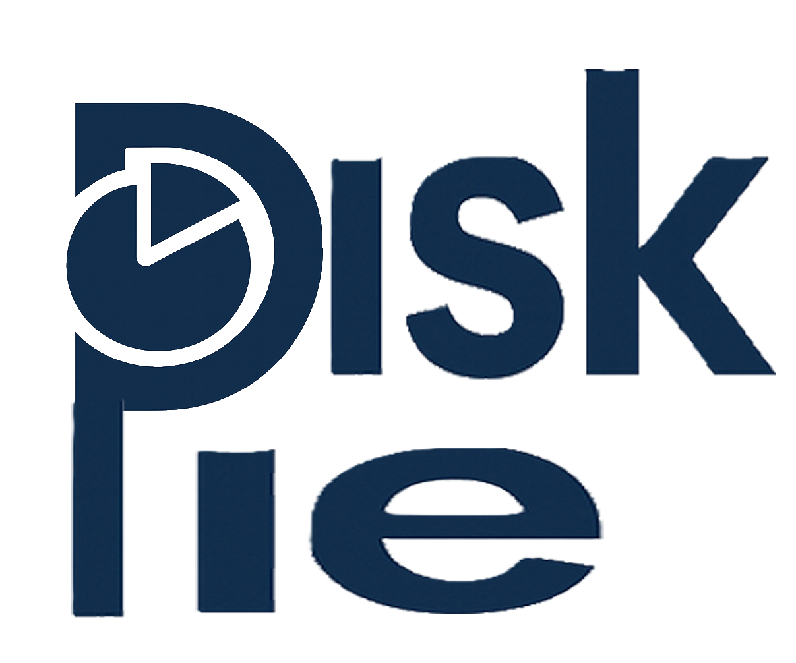

Instant pie map
Scan any directory and immediately see folders and grouped files as color-coded slices with hover tooltips.
- Limitless slices, auto-grouped files
- Hover highlights with percentages
- Readable labels that avoid clutter

DiskPieDesktop disk clarity • fast pie visualizer
DiskPie scans any folder, turns it into a live pie chart, and gives you right-click controls to open, rescan, or save the state for later.
Disk Size
1.0 TB
Used
542 GB
Free
46%
What you get
DiskPie is a desktop-first Flutter app for visualizing disk usage without digging through endless folders.
Scan any directory and immediately see folders and grouped files as color-coded slices with hover tooltips.
Save a shallow snapshot of your scan, then load it later to recall what was taking up space at that moment.
Open folders in your file explorer or rescan a subfolder straight from the chart and list.
Disk size, used space, free percentage, and recent scan locations stay pinned above your chart.
Workflow
Choose any path. DiskPie streams progress so you always know what's being scanned.
Inspect slices, open heavy folders in your OS, or rescan a specific branch immediately.
Capture a snapshot once you're happy. Reopen it later to recall what changed.
Why DiskPie
No walls of text, just a live pie, a grouped file bucket, and the controls you actually need.
Recent scans
Snapshot shelf
Log highlights